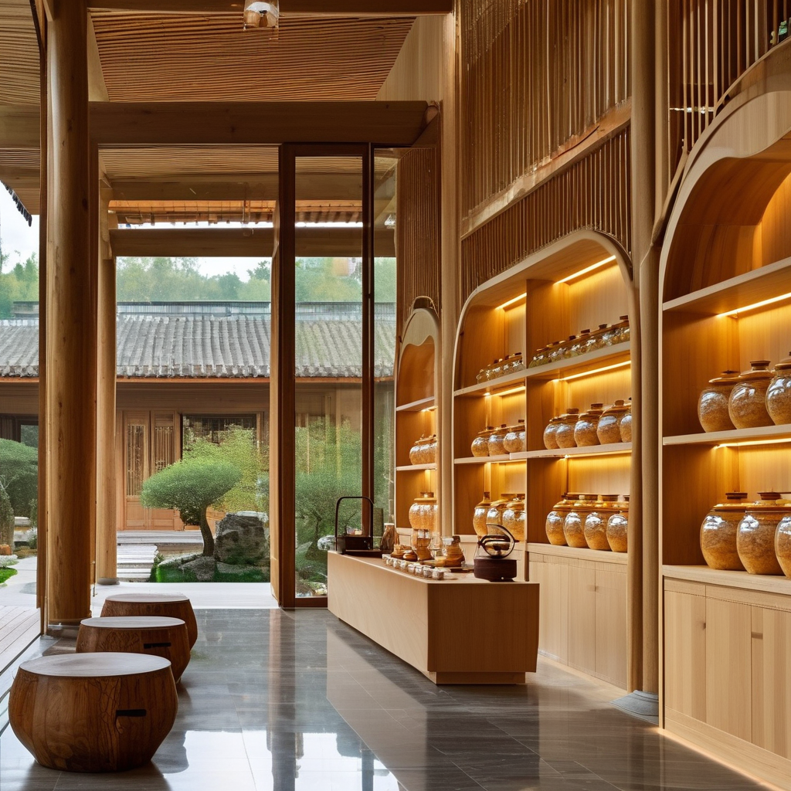

百年新會陳皮的文化底蘊：從一片果皮讀懂時光的故事
清晨五點半，天還沒透亮，江門新會茶坑村的老陳伯就已經蹲在自家二樓的天台上了。他今年七十二歲，守這片柑園守了五十年。父親走的時候，拉著他的手說：「我這輩子最大的家當，不是這幾畝地，是樓上那幾罐陳皮。你要好好替我守著。」那幾罐陳皮，最老的，是一九四七年的。
一、一片果皮，何以稱「陳」
很多外地朋友不理解：不就是橘子皮？放幾年就能賣出金子價？這句話聽起來像笑話，但新會人聽了會認真搖頭。
「不是所有橘子皮都叫陳皮。」 老陳伯一邊翻皮一邊說，「起碼得是新會核心產區的茶枝柑，三刀法開皮，自然生曬，起碼三年才能叫陳皮。烘過的、烤過的，加過添加劑的，統統不算。」
陳皮不是普通的橘子皮。它必須是廣東新會核心產區種植的茶枝柑剝下來的果皮，必須經過至少三年以上的自然陳化。明代李時珍《本草綱目》裡寫得很清楚：「今天下以廣中來者為勝。」

二、三十五年的皮，是怎麼「陳」出來的
行內有句話叫「三年成皮，五年入藥，十年成寶」。老陳伯說：「三十多年前的皮，全靠人手。那時候沒有機器開皮，一刀下去要正、要穩、要順著柑的紋路。」
三、造假與信任
然而，陳皮市場的亂象，是這幾年最讓老一輩新會人痛心的事。老陳伯的女兒從加拿大打來視頻：「爸，我在直播間看到九塊九包郵的『十五年老皮』，連運費都不夠，怎麼可能？」老陳伯說：「你別氣。氣壞了自己這二十年存的真皮也救不回來。」

四、寫在最後
「你們年輕人啊，別把陳皮只當商品。它是時間的琥珀，是這片土地給我們的禮物。」
是啊。這個世界上有些東西，是用錢買不到的。是用一輩子守出來的。就像一片好的新會陳皮。
常見問題
Q1：三十五年的陳皮真的存在嗎？ A：存在，但極為稀缺。三十五年陳化意味著每年百分之三至五的自然損耗，加上九十年代新會柑園面積遠不如現在，能完好保存至今的鳳毛麟角。
Q2：直播間九塊九包郵的「十五年老皮」可信嗎？ A：完全不可信。十五年陳皮的倉儲、損耗、资金成本遠超這個售價，正宗十五年新會陳皮售價通常在數千元一斤以上。
Q3：普通家庭如何儲存陳皮？ A：最佳方式是前三年的新皮在秋天和冬天反覆曬乾，待水分完全收乾後，第四年開始放進玻璃罐收藏，放置陰涼處，切忌密封、廚房或冰箱。
Q4：陳皮可以入菜但有什麼禁忌？ A：陳皮入菜最忌「多」，一隻老鴨湯放兩三片就夠了。孕婦和兒童應慎用，正在服藥的人士應先諮詢醫師意見，唔好將陳皮當成治療方案。
Q5：如何驗證陳皮的年份和產地？ A：最可靠的方法是選擇有完整溯源體系的品牌，查驗區塊鏈「一物一碼」溯源資訊，確認具體到村，並要求提供試喝樣皮。